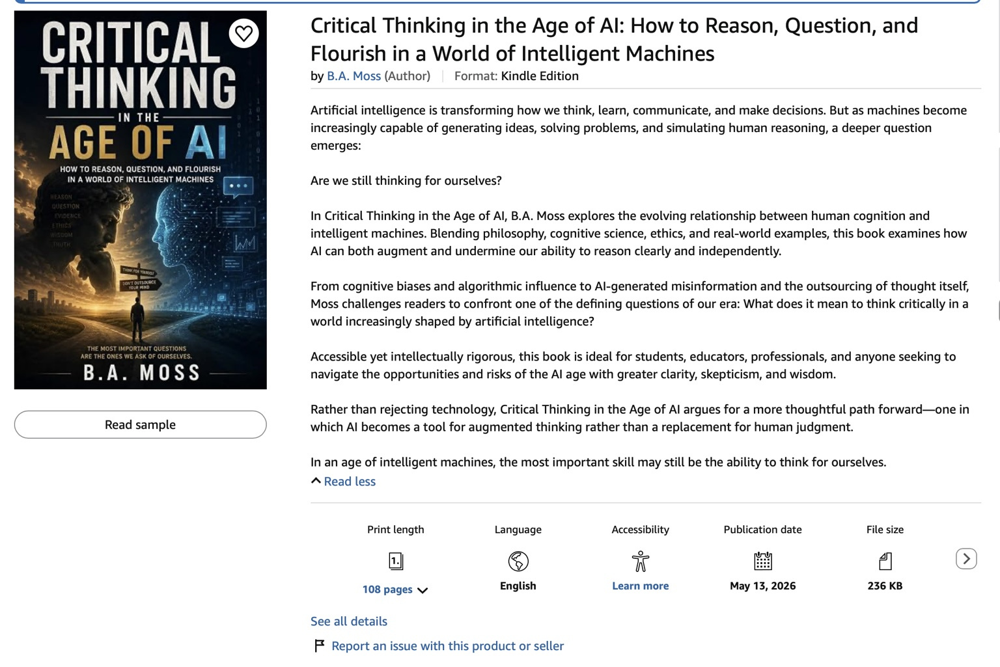
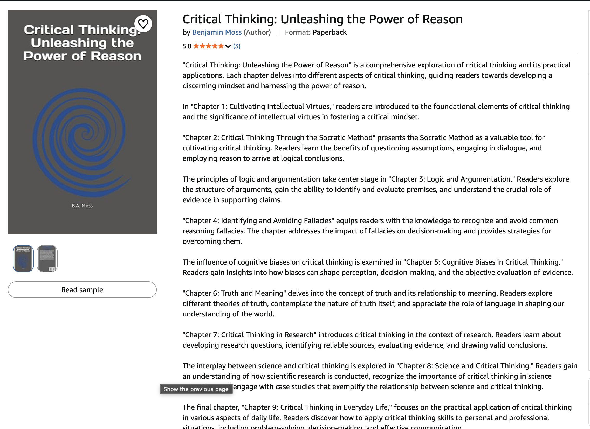
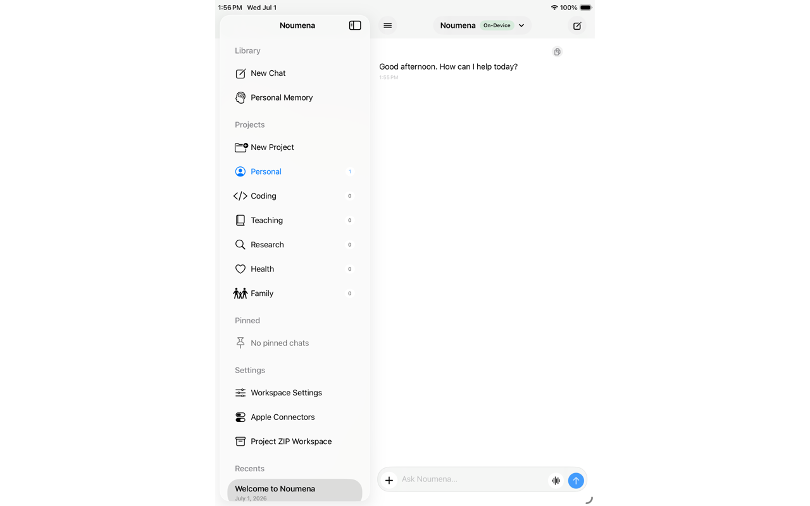
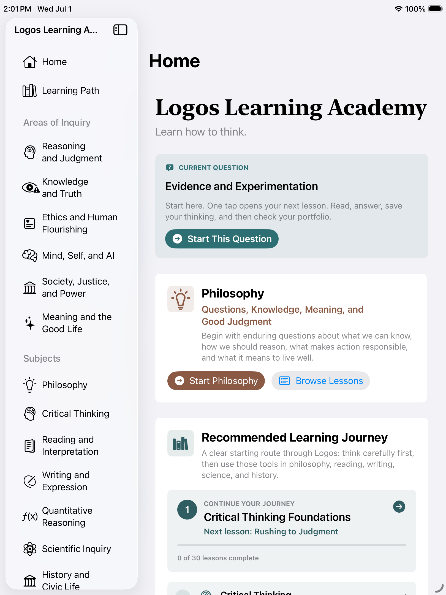

Philosophy • Artificial Intelligence • Education
Philosophy, artificial intelligence, and education for clearer thinking.
I am Benjamin A. Moss, an Associate Professor of Philosophy, author, and software developer whose work bridges applied ethics, critical thinking, AI literacy, educational technology, and human-centered software design.
Designed for readers looking for scholarship, teaching resources, and applied AI work in one place.

Philosophy
Ethics, reasoning, epistemology, and the examined life.
AI & Technology
Human-centered tools that augment judgment rather than replace it.
Education
Teaching resources, learning apps, and Socratic inquiry.
About
Scholar, educator, and builder.
My work explores how philosophy can help people reason more carefully about ethics, technology, inquiry, healthcare, civic life, and human flourishing. I am especially interested in how artificial intelligence can support learning without displacing human judgment, responsibility, or original thought.
I currently teach applied ethics and critical thinking in online higher education, develop AI-assisted educational tools, and build SwiftUI software projects focused on reasoning, learning, accessibility, and responsible technology use.
This site serves as a central hub for my writing, publications, teaching resources, AI learning tools, and independent software projects.
Core themes
- Critical thinking and intellectual responsibility
- AI literacy and responsible technology use
- Applied ethics and human flourishing
- Socratic pedagogy and philosophy education
- Human-centered software and learning design
Books & Publications
Writing on critical thinking, AI, and philosophy education.

New 2026
Critical Thinking in the Age of AI
A book on reasoning, questioning, and flourishing in a world of intelligent machines, with attention to cognitive bias, algorithmic influence, misinformation, and the outsourcing of judgment.
View on Amazon
Critical Thinking: Unleashing the Power of Reason
A framework for intellectual virtues, logical reasoning, cognitive bias, the Socratic Method, and reflective thought.
View on AmazonChatGPT as a Catalyst for Critical Thinking
A classroom-focused essay on using AI to deepen reasoning, autonomy, and intellectual responsibility rather than bypass learning.
Published June 27, 2025Critical Thinking in the Digital Age
A practical guide for lifelong learners, blending theory, Socratic dialogue, real-world cases, and intellectual virtues.
Published May 27, 2025Beyond the Ban
An argument for ethical generative AI integration in education, emphasizing accessibility, learning, and critical thinking.
Published February 7, 2025The Socratic Method and Critical Thinking
An exploration of Socratic questioning as a practice for uncovering assumptions, refining reasoning, and cultivating intellectual humility.
Published May 22, 2023Research
Reasoning, judgment, and technology.
My research interests include applied ethics, AI ethics, philosophy of technology, social epistemology, moral reasoning, philosophy of education, and Socratic pedagogy.
Selected article themes
- The Socratic Method and critical thinking
- Critical thinking, curiosity, and emotional intelligence in the age of AI
- Philosophy in high school curricula
- The evolutionary roots of cognitive biases
- Virtue ethics, children, and moral cultivation
- Critical thinking and the good life
Teaching
Resources for applied ethics and clear reasoning.
HUM301 Visual Study Guide Handbook
A visual companion for applied ethics, moral reasoning, healthcare ethics, and key course concepts.
Applied Ethics Materials
Lecture companions on Plato, relativism, utilitarianism, Kantian ethics, virtue ethics, justice, and bioethics.
Critical Thinking Resources
Short guides on argument analysis, Socratic questioning, fallacies, bias, truth, language, and meaning.
Philosophical Primers
Accessible introductions to major philosophical ideas, from Socrates to conceptual analysis.
Teaching materials are provided for educational and portfolio purposes. Reproduction, redistribution, or publication without permission is prohibited.
Current Work
Philosophy, online learning, and human-centered AI.
My professional work combines higher-education teaching, curriculum design, applied ethics, AI literacy, and independent software development. I design learning experiences and tools that help people evaluate evidence, clarify assumptions, reason through ethical questions, and use AI thoughtfully.
Selected roles
- Associate Professor of Philosophy, Nightingale College
- Independent AI & Educational Technology Developer
- Author of books and essays on critical thinking and AI
- Developer of SwiftUI learning and reasoning tools
Credentials & Professional Development
Teaching, AI, and learning-design credentials.
Washington State Residency Teacher Certificate
Social Studies credential supporting secondary-level humanities, civic reasoning, and philosophy-adjacent instruction.
University of Michigan AI Learning Design
Professional development in generative AI, learning-design strategy, and AI-supported instructional activities.
Google & Northeastern AI Ethics
Coursework in responsible AI, AI ethics, and philosophical approaches to ethical technology use.
Harvard, Vanderbilt, and Oxford AI Programs
Professional education in generative AI, AI for educators, model limitations, governance, and responsible deployment.
Projects
Software projects connecting AI, education, philosophy, and everyday reasoning.
These projects are organized around practical reasoning: tools for learning, better questions, responsible AI use, and clearer decision-making.

AI assistant • SwiftUI • Productivity
Noumena Chat
A privacy-conscious AI assistant concept with connectors, files, visualizations, and model selection.
View project details
iOS • Education • Philosophy
Logos Learning Academy
An educational platform for inquiry, judgment, critical thinking, philosophy, and lifelong learning.
View project details
Education • AI tutoring • Learning design
Learning Coach
An AI-supported learning platform designed to help students reflect, practice, and reason more carefully.
View project details
Reasoning support • Meetings • Analysis
Critical Listening Assistant
Real-time reasoning support for meetings, media, lectures, and debates.
View project details
Ethics • AI tools • Philosophy
Philosophy & Ethics Learning Tools
Socratic questioning, utilitarian reasoning, Kantian evaluation, virtue ethics, and bioethics navigation.
View project details
macOS • Diagnostics • Developer tool
Mission Control Inspector
A focused utility for analyzing Mission Control and window behavior during development.
View project detailsFeatured Initiative
Logos Learning Academy
Logos Learning Academy is an educational platform designed to help learners think clearly, reason carefully, and live wisely. Rather than rewarding passive completion, Logos encourages learners to ask better questions, evaluate evidence, examine assumptions, and reflect on their own thinking.
Contact
Connect
For professional inquiries, teaching, research, software projects, or collaboration, please connect through GitHub or LinkedIn. Email is shown in an obfuscated format to reduce automated scraping.